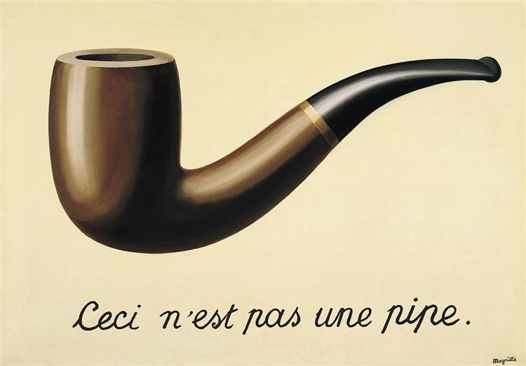

Sessão 15: Notando Palavras RepetidasSession 15: Noticing Repeated Words
Principais AprendizadosKey Takeaways
- Embora as histórias na Bíblia Hebraica tenham sido escritas ao longo de um longo período de tempo, elas estão intrincadamente conectadas umas às outras.Although the stories in the Hebrew Bible were written over a long period of time, they are intricately connected to one another.
- A Bíblia Hebraica é como uma colcha onde os pedaços representam várias histórias e o fio que os costura representa palavras e padrões repetidos.The Hebrew Bible is like a quilt where the pieces represent various stories and the thread stitching them together represents repeated words and patterns.
- O ponto dessa colcha de histórias reencenando e desenvolvendo a mesma linha de história é para vermos nossas próprias vidas nesses padrões. As histórias na Bíblia não são apenas algo que olhamos — elas se tornam aquilo através do que olhamos para entender nossas experiências.The point of this quilt of stories replaying and developing the same storyline is for us to see our own lives in these patterns. The stories in the Bible aren't just something we look at—they become what we look through to understand our experiences.
Como Ler as Escrituras HebraicasHow To Read the Hebrew Scriptures
A Bíblia Hebraica é um texto antigo, e um texto é um ato de comunicação literária.The Hebrew Bible is an ancient text, and a text is an act of literary communication.
Comunicação Textual. Criado por Tim Mackie para BibleProject Classroom: Introdução à Bíblia Hebraica (2019).Textual Communication. Created by Tim Mackie for BibleProject Classroom: Introduction to the Hebrew Bible (2019).
As ideias da nossa "enciclopédia de produção" e "enciclopédia de recepção" vêm de Reading the Bible Intertextually, de Stefan Alkier.Our "encyclopedia of production" and "encyclopedia of reception" are from Stefan Alkier's Reading the Bible Intertextually.
Nossa "enciclopédia" é o depósito mental de palavras, ideias, imagens e histórias que reunimos e armazenamos em nossas memórias desde nossos primeiros momentos de vigília. Todo texto que lemos será interpretado e compreendido à luz de nossa enciclopédia operante atual. Os autores têm suas enciclopédias a partir das quais produzem textos, e os leitores têm enciclopédias através das quais processam e compreendem textos.Our "encyclopedia" is the mental storehouse of words, ideas, images, and stories that we gather and store in our memories from our first waking moments. Every text we read will be interpreted and understood in light of our current operating encyclopedia. Authors have their encyclopedias from which they produce texts, and readers have encyclopedias through which they process and understand texts.
O leitor modelo que quer entender um autor em seus próprios termos adaptará sua enciclopédia de recepção aprendendo sobre a enciclopédia de produção do autor.The model reader who wants to understand an author on their terms will adapt their encyclopedia of reception by learning about the author's encyclopedia of production.
Onde está o significado localizado no texto? O texto é a incorporação literária da comunicação intencional do autor.Where is the meaning located in the text? The text is the literary embodiment of an author's intended communication.
"[Uma abordagem focada no texto] propõe-se a entender não as realidades por trás do texto, mas o próprio texto como um padrão de significado e efeito. O que esta parte da linguagem ... significa em contexto? Quais são as regras que governam a transação entre o narrador ou poeta e o leitor? ... Que imagem de um mundo a narrativa projeta? Por que ela desdobra a ação nesta ordem particular e a partir deste ponto de vista particular? Qual é a parte desempenhada pelas omissões, redundâncias, ambiguidades, alternações entre história e resumo ou entre linguagem elevada e coloquial? Como a obra se mantém unida? Em que relação cada parte está com o todo? Prosseguir por esta linha de questionamento é dar sentido à obra como um ato de comunicação, sempre com uma meta por parte do escritor e sempre exigindo atividade interpretativa por parte do destinatário. O autor empunha certas ferramentas linguísticas e literárias visando certos efeitos no leitor, enquanto o leitor infere uma mensagem coerente a partir dos sinais, e é o próprio texto que medeia entre estes dois, incorporando a intenção do autor e guiando a resposta do leitor.""[A text-focused approach] sets out to understand not the realities behind the text but the text itself as a pattern of meaning and effect. What does this piece of language ... signify in context? What are the rules governing the transaction between the storyteller or poet and the reader? ... What image of a world does the narrative project? Why does it unfold the action in this particular order and from this particular viewpoint? What is the part played by the omissions, redundancies, ambiguities, alternations between story and summary or elevated and colloquial language? How does the work hang together? In what relationship does each part stand to the whole? To pursue this line of questioning is to make sense of the work as an act of communication, always goal-directed on the writer's part and always requiring interpretive activity on the addressee's. The author wields certain linguistic and literary tools with an eye to certain effects on the reader, while the reader infers a coherent message from the signals, and it is the text itself that mediates between these two, embodying the author's intent and guiding the reader's response."
Sternberg, Meir (1987). The Poetics of Biblical Narrative: Ideological Literature and the Drama of Reading. Indiana University Press. 15.Sternberg, Meir (1987). The Poetics of Biblical Narrative: Ideological Literature and the Drama of Reading. Indiana University Press. 15.
Texto vs. EventoText vs. Event
Um texto fornece uma representação literária de um objeto que ajuda o leitor a captar seu significado e sua importância a partir de uma perspectiva particular.A text provides a literary representation of an object that helps the reader grasp its meaning and significance from a particular perspective.
Magritte, René (1929). A Traição das Imagens. Wiki ArtMagritte, René (1929). The Treachery of Images. Wiki Art
"Ah, o famoso cachimbo. Como as pessoas me repreenderam por ele! E ainda assim, poderiam encher o meu cachimbo? Não, é apenas uma representação, não é? Assim, se eu tivesse escrito na minha imagem 'Isto é um cachimbo', eu teria mentido!""Ah, the famous pipe. How people reproached me for it! And yet, could you stuff my pipe? No, it's just a representation, is it not? So if I had written on my picture 'This is a pipe,' I'd have been lying!"
Torczyner, Harry (1985). Magritte: The True Art of Painting. Abradale/Abrams. 85.Torcyzner, Harry (1985). Magritte: The True Art of Painting. Abradale/Abrams. 85.
Esquerda: Telescópio Hubble (2009). Imagem do Hubble Deep Field. (Wikimedia Commons). Direita: van Gogh, Vincent (1889). A Noite Estrelada. (Wikimedia Commons).Left: Hubble Telescope (2009). Hubble Deep Field Image. (Wikimedia Commons). Right: van Gogh, Vincent (1889). The Starry Night. (Wikimedia Commons).
Ambas as imagens são representações do universo estrelado retratado através de diferentes mídias para diferentes propósitos, e com diferentes efeitos sobre o espectador. Nenhuma delas é o próprio universo estrelado ("Isto não é um cachimbo."). A foto do Hubble representa um realismo máximo, enquanto "A Noite Estrelada" emprega um estilo impressionista. "A Noite Estrelada" transmite a impressão e o sentimento do céu noturno conforme é relevante para uma pequena comunidade humana. Ela comunica muito através de detalhes mínimos e usa justaposição e contraste (céus redemoinhantes vs. construções humanas geométricas) bem como semelhança (tons azuis no céu e na terra).Both images are representations of the starry universe portrayed through different media for different purposes, and with different effects on the viewer. Neither one is the starry universe itself ("This is not a pipe."). The Hubble photo represents a maximal realism, while "The Starry Night" employs an impressionistic style. "The Starry Night" conveys the impression and feeling of the night sky as it's relevant to a small human community. It communicates much through minimal detail and uses juxtaposition and contrast (swirling skies vs. geometric human buildings) as well as similarity (blue tones in the sky and on land).
ResumoSummary
- A Bíblia Hebraica oferece uma representação literária da história de Israel que afirma ser uma interpretação profética, divinamente inspirada, da história de Israel dentro do contexto maior dos propósitos cósmicos de Deus.The Hebrew Bible offers a literary representation of Israel's history that claims to be a divinely inspired, prophetic interpretation of Israel's history within the larger context of God's cosmic purposes.
- A Bíblia Hebraica não é uma história de Israel (ou "crônica das façanhas de Jonas"); em vez disso, é uma interpretação teológica da história de Israel (e de Jonas) projetada para eliciar uma resposta do leitor.The Hebrew Bible is not a history of Israel (or "chronicle of Jonah's exploits"); rather, it is a theological interpretation of Israel's (and Jonah's) story designed to elicit a response from the reader.
- A Bíblia Hebraica é uma coleção de coleções, composta por materiais textuais de todos os períodos da história, religião e literatura de Israel.The Hebrew Bible is a collection of collections, made up of textual materials from all periods of Israel's history, religion, and literature.
Estágios no Processo de Fazer o TaNaKStages in the Process of Making the TaNaK
Como um autor faz uma coleção de coleções significar algo? Devemos primeiro entender os materiais reais usados pelos autores bíblicos. A tradição da literatura israelita antiga surgiu através de um processo de múltiplos passos que ainda é discernível ao olhar para as evidências literárias dentro dos próprios textos.How does an author make a collection of collections mean something? We must first understand the actual materials used by the biblical authors. The tradition of ancient Israelite literature came into existence through a multi-step process that is still discernible by looking at literary evidence within the texts themselves.
- Eventos — A vida de Abraão, o êxodo, as peregrinações no deserto, a instalação na terra de Canaã, etc.Events — The life of Abraham, the exodus, the wilderness wanderings, settlement in the land of Canaan, etc.
As Origens da Bíblia a partir de uma Perspectiva Histórica. Criado por Tim Mackie para BibleProject Classroom: Introdução à Bíblia Hebraica (2019).The Origins of the Bible From a Historical Perspective. Created by Tim Mackie for BibleProject Classroom: Introduction to the Hebrew Bible (2019).
- Tradições Orais — A história familiar dos antepassados de Abraão, as peregrinações no deserto; canções antigas: Êxodo 15, Juízes 5, Salmo 29, etc.Oral Traditions — The family history of Abraham's ancestors, the wilderness wanderings; Early songs: Exodus 15, Judges 5, Psalm 29, etc.
- Tradições Escritas Anteriores — "Este é o rolo das gerações da humanidade" (Gn 5:1); "O rolo de Jasar" (Js 10:13; 2 Sm 1:18); "O rolo das guerras de Yahweh" (Nm 21:14).Early Written Traditions — "This is the scroll of the generations of humanity" (Gen. 5:1); "The scroll of Jashar" (Josh. 10:13; 2 Sam. 1:18); "The scroll of the wars of Yahweh" (Num. 21:14).
- Coleções Anteriores de Tradições Escritas — "O rolo dos feitos dos reis de Israel" (1 Reis 14:19, 29, etc.); "O comentário do rolo dos reis" (2 Crônicas 24:27).Early Collections of Written Traditions — "The scroll of the deeds of the kings of Israel" (1 Kgs. 14:19, 29, etc.); "The commentary of the scroll of the kings" (2 Chron. 24:27).
- Proto-Edições de Livros Bíblicos — "Os provérbios de Salomão que os homens de Ezequias compilaram" (Prov. 25:1); "As orações de Davi, filho de Jessé, estão terminadas" (Sal. 72:20); a Torá "Mosaica" (Êx 21-23 e Deut. 12-26); primeira edição de Jeremias (Jer. 36).Proto-Editions of Biblical Books — "The proverbs of Solomon that the men of Hezekiah compiled" (Prov. 25:1); "The prayers of David son of Jesse are ended" (Ps. 72:20); The "Mosaic" Torah (Exod. 21-23 and Deut. 12-26); First edition of Jeremiah (Jer. 36).
- Edições do TaNaK dos Livros Bíblicos — a forma final.TaNaK Editions of Biblical Books — the final form.
As Origens da Bíblia a partir de uma Perspectiva Histórica. Criado por Tim Mackie para BibleProject Classroom: Introdução à Bíblia Hebraica (2019).The Origins of the Bible From a Historical Perspective. Created by Tim Mackie for BibleProject Classroom: Introduction to the Hebrew Bible (2019).
Cada um destes estágios merece estudo por interesse histórico. Contudo, a teologia judaica e cristã clássica ortodoxa (ou seja, a teologia bíblica) tem se baseado na edição final do texto bíblico, isto é, o texto das Escrituras Hebraicas na época de Jesus.Each of these stages is worthy of study for historical interest. However, classical orthodox Jewish and Christian theology (i.e., biblical theology) has been based on the final edition of the biblical text, that is, the text of the Hebrew Scriptures in the time of Jesus.
A Metáfora da Colcha de Retalhos da FamíliaThe Family Quilt Metaphor
Uma colcha feita de muitos materiais pré-existentes pode reter a integridade dos materiais anteriores enquanto dá aos novos elementos significado quando estes são colocados dentro de um contexto e de uma moldura de referência maiores.A quilt made of many preexisting materials can retain the integrity of the earlier materials while giving the new layers meaning when they are set within a larger context and frame of reference.
Assim, agora podemos perguntar: Qual é a matriz de temas e motivos que o autor de Jonas pressupõe que já conhecemos?So now we can ask: What is the matrix of themes and motifs that the author of Jonah assumes we already know?
A História por Trás da História de JonasThe Story Behind the Story of Jonah
- Gênesis 3-4: Adão, Eva, Caim e a cidade de sangue de Caim.Genesis 3-4: Adam, Eve, Cain, and Cain's city of blood.
- Gênesis 6-11: A geração do dilúvio e o escolhido (o consolador Noé) resgatado através das águas para interceder por meio de sacrifício. Deus se arrepende, mas a humanidade passa a fazer outra cidade.Genesis 6-11: The generation of the flood and the chosen one (comforter Noah) rescued through the waters to intercede through sacrifice. God relents, but humanity goes on to make another city.
- Gênesis 12, 18-19: Abraão tirado da Babilônia, intercede em favor de Sodoma.Genesis 12, 18-19: Abraham brought out of Babylon, intercedes on behalf of Sodom.
- Êxodo 2-3, 14-15: Deus resgata Moisés através das águas (em uma arca). Moisés então se encontra com Deus no Sinai (no fogo) e é comissionado a confrontar o rei do Egito. Moisés resiste, mas eventualmente vai. Israel foge e é resgatado através das águas em terra seca, e eles passam a temer a Yahweh e crer nele.Exodus 2-3, 14-15: God rescues Moses through the waters (in an ark). Moses then meets with God on Sinai (in fire) and is commissioned to confront the king of Egypt. Moses resists but eventually goes. Israel flees and is rescued through the waters on dry land, and they come to fear Yahweh and believe in him.
- Êxodo 32-34: O povo resgatado de Deus faz um ídolo. Deus ameaça trazer uma inundação de juízo sobre eles, mas Moisés intervém para oferecer intercessão, apelando a Abraão e então oferecendo sua própria vida como sacrifício de expiação. Deus perdoa o povo, e Moisés vê a Yahweh e aprende sobre o seu caráter.Exodus 32-34: God's rescued people make an idol. God threatens to bring a flood of judgment upon them, but Moses steps in to offer intercession, appealing to Abraham and then offering his own life as a sacrifice of atonement. God forgives the people, and Moses sees Yahweh and learns of his character.
- 1 Reis 17-19: Na geração pecaminosa de Acabe, Deus envia Elias para anunciar o oposto de uma inundação (uma seca). Ele conduz Israel a encontrar-se com Deus no fogo no Monte Carmelo, mas é finalmente mal-sucedido em fazer Israel voltar para Yahweh. Ele vai para o deserto, e em vez de interceder e oferecer a si mesmo, pede a Deus que o mate. Então vai ao Monte Sinai e faz uma festa de pena num diálogo com Deus. Ele é um anti-Moisés.1 Kings 17-19: In Ahab's sinful generation, God sends Elijah to announce the opposite of a flood (a drought). He leads Israel to meet with God in fire on Mount Carmel, but he is ultimately unsuccessful in turning Israel back to Yahweh. He goes to the wilderness, and instead of interceding and offering himself, he asks God to kill him. Then he goes to Mount Sinai and has a pity party in a dialogue with God. He is an anti-Moses.
- Jeremias 18, 26: Jeremias é enviado como um intercessor profético a Israel para lhes dizer que, se se arrependerem, Deus se arrependerá e não trará o desastre. Mas os israelitas o rejeitam e trazem sangue inocente sobre si mesmos.Jeremiah 18, 26: Jeremiah is sent as a prophetic intercessor to Israel to tell them that if they repent, God will relent and not bring disaster. But the Israelites reject him and bring down innocent blood upon themselves.
Temas Centrais do TaNaK Encontrados em JonasCore Themes of the TaNaK Found in Jonah
- Os seres humanos são violentos e destrutivos e trazem sobre si mesmos a culpa de sangue dos inocentes, compelindo Deus a trazer juízo.Humans are violent and destructive and bring the blood guilt of the innocent upon themselves, compelling God to bring judgment.
- Deus quer abençoar a humanidade em vez de destruí-la, por isso ele faz e cumpre sua promessa de resgatar a humanidade levantando um libertador/intercessor (Noé, Abraão, Moisés, Elias, Jeremias) que apelará à sua misericórdia.God wants to bless humanity instead of destroying them, so he makes and fulfills his promise to rescue humanity by raising up a deliverer/intercessor (Noah, Abraham, Moses, Elijah, Jeremiah) who will appeal to his mercy.
- Intercessores humanos são problemáticos, às vezes fazendo seu trabalho (Noé, Abraão, Moisés) mas outras vezes falhando em persuadir sua audiência (Jeremias) ou falhando pessoalmente (Elias).Human intercessors are problematic, sometimes doing their job (Noah, Abraham, Moses) but other times failing to persuade their audience (Jeremiah) or failing personally (Elijah).
- Os retratos de intercessores humanos apontam adiante para o intercessor profético supremo como Moisés.The portraits of human intercessors point forward to the ultimate prophetic intercessor like Moses.
- O livro de Jonas também aponta adiante para esta esperança (como Jesus entendeu em Mateus 12:40), mas o faz criando um retrato paródia invertido de Jonas como o profeta anti-Moisés.The book of Jonah also points forward to this hope (as Jesus understood in Matthew 12:40), but it does so by creating an inverted parody portrait of Jonah as the anti-Moses prophet.
Pergunta de ReflexãoReflection Question


Embora as histórias na Bíblia Hebraica tenham sido escritas ao longo de um longo período de tempo, elas estão intrincadamente conectadas umas às outras. Como isso é semelhante ou diferente de como você e aqueles no seu contexto tipicamente veem a Bíblia?Although the stories in the Hebrew Bible were written over a long period of time, they are intricately connected to one another. How is this similar or different from how you and those in your context typically view the Bible?